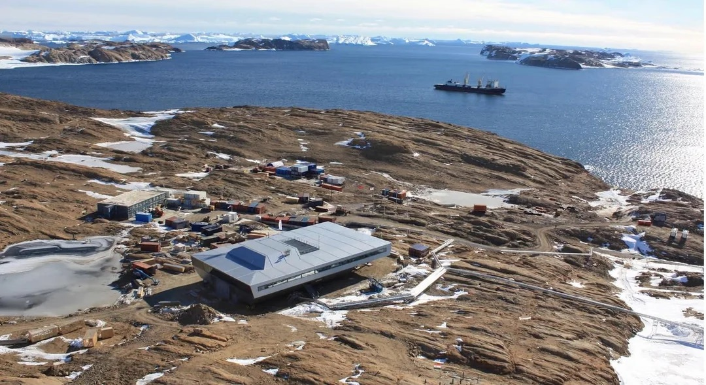
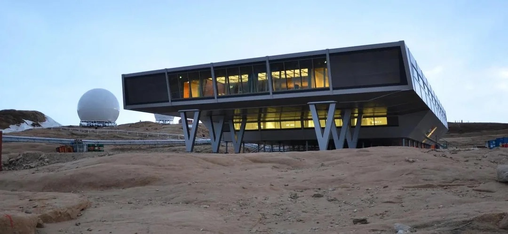
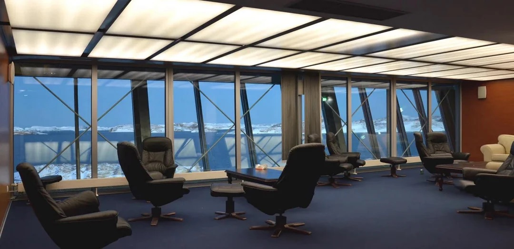

ਤਸਵੀਰਾਂ
ਅੰਟਾਰਕਟਿਕਾ
ਭਾਰਤੀ ਰਿਸ਼ਰਚ ਸੈਂਟਰ - ਅੰਟਾਰਕਟਿਕਾ
ਭਾਰਤੀ ਭਾਰਤ ਦਾ ਤੀਜਾ ਸਥਾਈ ਅਂਟਾਰਕਟਿਕ ਰਿਸ਼ਰਚ ਬੇਸ ਹੈ, ਜੋ 18 ਮਾਰਚ 2012 ਨੂੰ Larsemann Hills ਖੇਤਰ ਵਿੱਚ ਕਾਇਮ ਕੀਤਾ ਗਿਆ।

 |
 |
ਭਾਰਤੀ ਭਾਰਤ ਦਾ ਤੀਜਾ ਸਥਾਈ ਅਂਟਾਰਕਟਿਕ ਰਿਸ਼ਰਚ ਬੇਸ ਹੈ, ਜੋ 18 ਮਾਰਚ 2012 ਨੂੰ Larsemann Hills ਖੇਤਰ ਵਿੱਚ ਕਾਇਮ ਕੀਤਾ ਗਿਆ। ਇਹ ਬੇਸ Thala Fjord ਅਤੇ Quilty Bay ਦੇ ਵਿਚਕਾਰ, Stornes ਤੇ Broknes peninsulas ਦੇ ਦਰਮਿਆਨ, ਸਮੁੰਦਰ ਪੱਧਰ ਤੋਂ ਲਗਭਗ 35 ਮੀਟਰ ਉੱਚੇ ਸਥਿਤ ਹੈ।
ਬੇਸ ਦਾ ਡਿਜ਼ਾਈਨ ਅਤੇ ਕਨਸਟਰੱਕਸ਼ਨ ਇਕ ਨਵੀਂ ਅਪ੍ਰੋਚ ਨਾਲ ਕੀਤਾ ਗਿਆ, ਜਿਸ ਨਾਲ ਭਾਰਤ ਪਹਿਲਾ ਦੇਸ਼ ਬਣਿਆ ਜੋ ਸ਼ਿਪਿੰਗ ਕੰਟੇਨਰਜ਼ ਨੂੰ ਨਿਰਮਾਣ ਦਾ ਅਹਿਮ ਹਿੱਸਾ ਬਣਾਉਂਦਾ ਹੈ। ਇਹ 134 ਪ੍ਰੀਫੈਬ੍ਰਿਕੇਟਿਡ ਸ਼ਿਪਿੰਗ ਕੰਟੇਨਰਜ਼ ਨਾਲ ਬਣਾਇਆ ਗਿਆ, ਜੋ ਆਪਸ ਵਿੱਚ ਇੰਟਰਲੌਕਡ ਹਨ ਅਤੇ ਇਨਸੂਲੇਟਿਡ ਸਕਿਨ ਅਤੇ ਆਊਟਰ ਸ਼ੈੱਲ ਨਾਲ ਢੱਕੇ ਗਏ। ਬੇਸ ਨੂੰ 2011-12 ਦੀ ਅਂਟਾਰਕਟਿਕ ਸਮਰ ਵਿੱਚ ਸਿਰਫ 127 ਦਿਨਾਂ ਵਿੱਚ ਅਸੈਂਬਲ ਕੀਤਾ ਗਿਆ।
ਇਹ ਪ੍ਰੋਜੈਕਟ ਇਲੈਕਟ੍ਰਾਨਿਕਸ ਕੋਰਪੋਰੇਸ਼ਨ ਆਫ਼ ਇੰਡੀਆ ਲਿਮਿਟੇਡ (ECIL) ਵੱਲੋਂ ₹230 ਕਰੋੜ ਦੇ ਕਾਂਟਰੈਕਟ ਤੇ ਕੀਤਾ ਗਿਆ। ਮੇਨ ਬਿਲਡਿੰਗ ਦਾ ਫਲੋਰ ਏਰੀਆ 2,162 ਵਰਗ ਮੀਟਰ (23,270 sq ft) ਹੈ ਅਤੇ ਇਸ ਵਿੱਚ ਤਿੰਨ ਫਲੋਰਜ਼ ਹਨ।